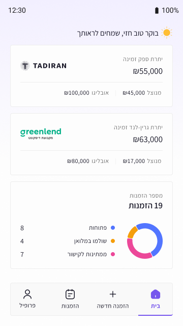
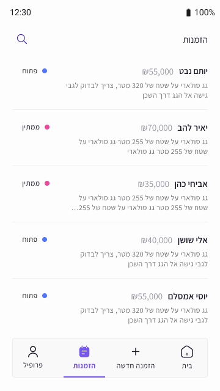
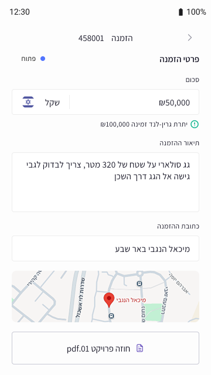
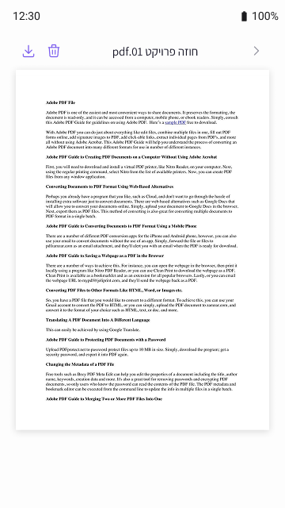
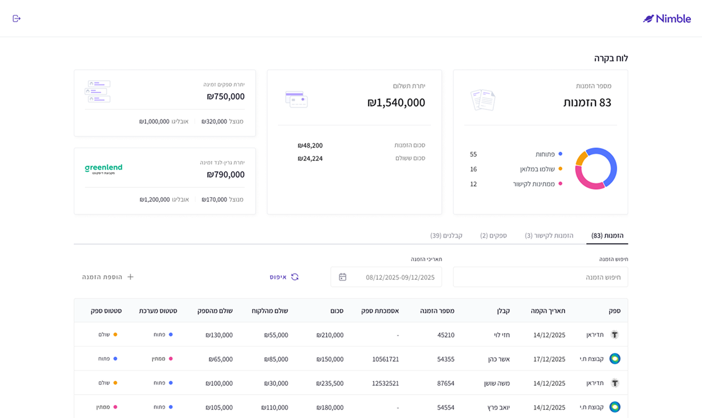
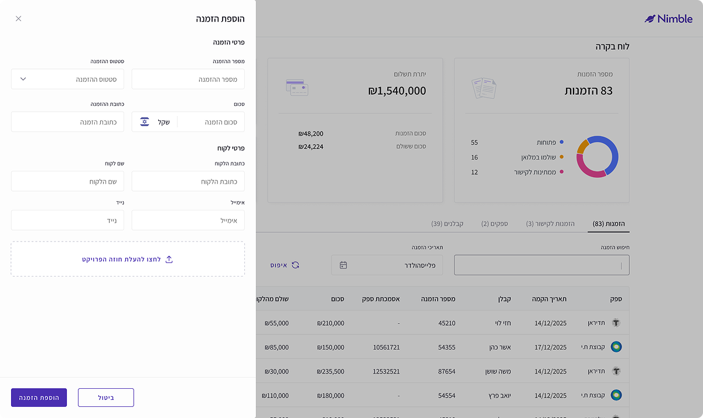
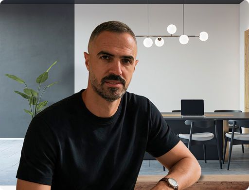

Nimble · 2025
Making financial data easier to understand
Project Overview
Making data accessible to the contractor in the application
An application for managing tasks, clients, and processes, with an emphasis on presenting a daily status picture in a simple and quick way.
The challenge
View financial data about projects and their statuses
The challenge was to present data that is currently transferred in cumbersome Excel spreadsheets to an application that will display all the contractor's data, such as how much balance he has left from the project, how much has been used, and how much obligation remains. A graph that displays order statuses by how many are open, how many have been paid, and how many are pending.
The application provides a comprehensive solution for the contractor, allowing him to receive a broad overview in a convenient and quick way right on the home screen.
Contractors App
The home dashboard was designed to provide users with a clear, high-level overview of their daily work. It brings together active projects, financial information, and task statuses in one focused experience, helping users quickly understand what requires their attention.




Dashboard
The order management dashboard was designed to provide users with both a high-level business overview and direct access to detailed operational data. Key metrics such as total orders, payment status, and financial balances are presented alongside a structured and searchable order table.
The information architecture was designed around a clear hierarchy, allowing users to move from understanding overall business performance to filtering, reviewing, and managing individual orders without losing context.

The order creation flow was designed as a contextual side panel, allowing users to add a new order without leaving the main order management workspace.
The form is structured into clear sections for order details, customer information, and supporting documents, helping users complete a complex process in a focused and organized way.
Instead of moving users to a separate page, the creation flow was designed as a side panel to preserve context and support a faster workflow. Clear information grouping and a persistent action area help users complete the process without losing their place in the system.


Keep in touch
If my work resonates with you and you'd like to learn more about my experience, approach, or potential collaboration, I'd be happy to connect.